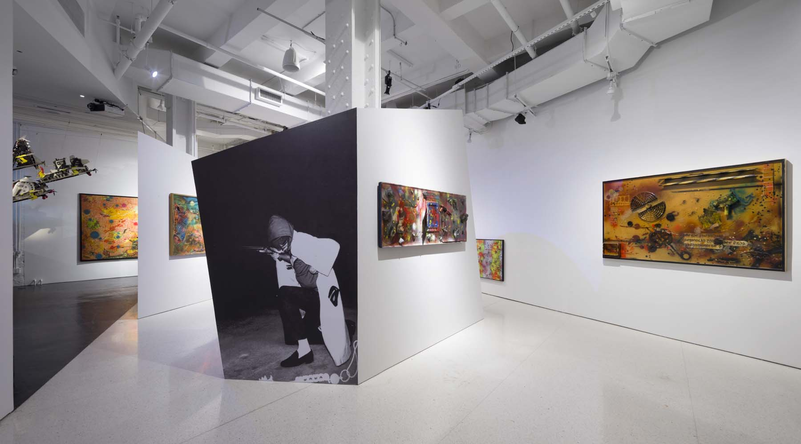
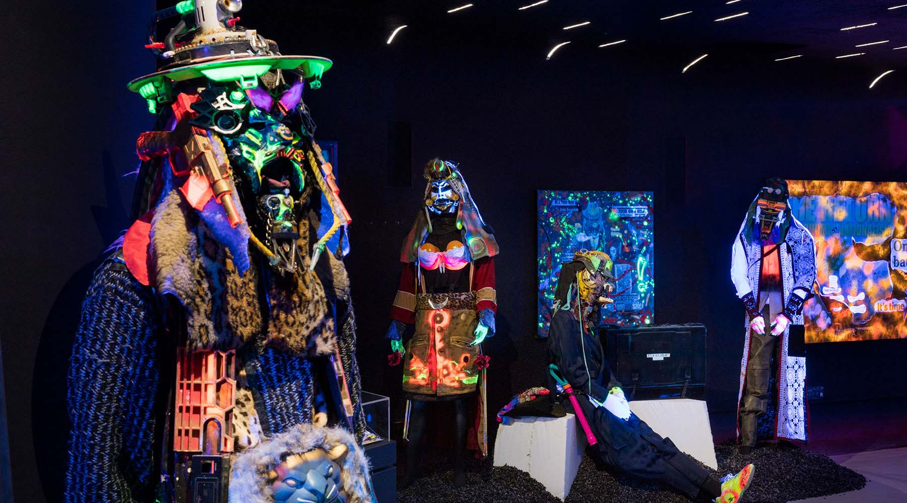

RAMMΣLLZΣΣ: Racing for Thunder presented the work of Gothic Futurist Rammellzee, featuring an eclectic array of artworks, music, writings, rare archival documentation, and ephemera, gathered from disparate sources around the world, to outline a chronology of his life and legacy.
Told by those whose life he orbited, the exhibition included an oral history project featuring TOXIC, Kool Koor, Lee Quiñones, Jim Jarmusch, Eszter Balint, and many more. The oral histories helped frame Rammellzee’s influence while bringing together a shared history about the man behind the myth.
Told by those whose life he orbited, the exhibition included an oral history project featuring TOXIC, Kool Koor, Lee Quiñones, Jim Jarmusch, Eszter Balint, and many more. The oral histories helped frame Rammellzee’s influence while bringing together a shared history about the man behind the myth.



All images credit: Installation view of RAMMΣLLZΣΣ: Racing for Thunder at Red Bull Arts New York, 2018. Photos by Lance Brewer. All artwork © 2018 The Rammellzee Estate.
SELECTED PRESS
The New Yorker, by Hua Hsu
The New York Times, by Jon Caramanica
Village Voice, by Siddhartha Mitter
Brooklyn Street Art
The Art Newspaper
COLLABORATORS
The exhibition was organized by Max Wolf and Carlo McCormick, with Candice Strongwater, Jeff Mao, and Christian Omodeo.
Exhibition Design and Architecture: studioSTIGSGAARD
Art Director: Erin Knutson
Oral History Interviewer, Jeff Mao
Oral History Producer, Candice Strongwater
Audio Engineers, Hasan Moore, Joe Hazan
Oral History Engineer, Dallas Moore
Editorial Advisor: Tamalyn Miller
Production Manager: Amanda Contrada
Installation Managers: Kyle Clairmont Jacques with Kyla Chevrier and Greg Kalliche
Exhibition Crew: Nathaniel de Large with Ilie Paun Capriel, Claude Barnes, Alex Holmes, Craig Monteith, John Bianchi and Hayley Martell
Gallery Manager: Jenny Slattery
Registrar: Beatriz Palacios
Content and Communications: Mac Concordia
Brand Manager: Hannah Chun
PROGRAMS
Public programs were organized across slideshows and live performances, artist-led gallery tours, and arts education workshops for students.
NO GUTS NO GALAXY
The format of this weekly series of artist-curated slideshows took inspiration from an audio recording of a slideshow/performance called RAMMΣLLZΣΣ: UNDERGROUND INNER THINKING (1987), given by the artist at the Stedelijk Museum in Amsterdam, where, in between impromptu freestyles and bouts of audience heckling, Rammellzee espoused his philosophical tenets of Gothic Futurism and Ikonoklast Panzerism. Presenters for NO GUTS, NO GALAXY included artists, photographers, writers, curators, and musicians, many of whom shared a common history and personal connection with Rammellzee, or have found inspiration in the artist’s diverse, interdisciplinary output. Participants included: Kenneth Goldsmith, Steffani Jemison, Charlie Ahearn, Kool Koor, Carlo McCormick, Black Quantum Futurism, Seth Tillett (narrated by The RAMM:ELL:ZEE), Death Comet Crew, and D. Denenge Duyst-Akpem.
GLOWING CREATION: A Rammellzee-inspired Opera
Over the course of six weeks—inspired by Rammellzee’s unique brand of performance art and ornate costumery—a group of students, under the tutelage of visiting artists, designed personalized Tyvek suits and masks, created musical tracks, and developed singular performances featuring their own interpretive break-dancing and choreography. Workshops were led by Kool Koor, Tau Lewis, and Standing on the Corner’s Gio Escobar. At the end of the summer, a selection of students showcased the culmination of their six-week arts program at the Abrons Playhouse Theater. The event also featured the screening of the iconic documentary Style Wars (1983), a film chronicling the birth of hip hop culture in the ‘70s and ‘80s. Organized in collaboration with Chantara Ellis, Director of School & Community Programs, Abrons Arts Center.
Exhibition tours
Artist-led walk-throughs featured Crazy Legs, president of the iconic b-boy and hip-hop group the Rock Steady Crew, writer and artist Enrico Isamu Ōyama, and Delta 2, iconic graffiti artist and member of the Gettovets.